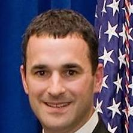
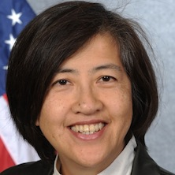

Craig Clay is the Executive Vice President of RR Donnelley’s Global Capital Markets, Business Process...
Craig Clay is the Executive Vice President of RR Donnelley’s Global Capital Markets, Business Process...
Herschel Chandler is a leading information management practitioner and educator specialized in...
Dan Chenok is Executive Director of the IBM Center for The Business of Government. He oversees all of...
Craig Clay is the Executive Vice President of RR Donnelley’s Global Capital Markets, Business Process...
 Gene L. Dodaro became the eighth Comptroller General of the United States and head of the...
Gene L. Dodaro became the eighth Comptroller General of the United States and head of the...
 State Representative Mike Duffey is currently serving his second term in the Ohio House of...
State Representative Mike Duffey is currently serving his second term in the Ohio House of...
 Amy Edwards is the Director of the Government Performance Task Force U.S. Senate Budget Committee. The Senate...
Amy Edwards is the Director of the Government Performance Task Force U.S. Senate Budget Committee. The Senate...
Mark Flannery is the Chief Economist and Director of the Division of Economic and Risk Analysis at...
 Bill Franks is Chief Analytics Officer for Teradata, where he provides insight on trends in...
Bill Franks is Chief Analytics Officer for Teradata, where he provides insight on trends in...
 Eric Gillespie is CEO and Founder of Govini. He is the former Senior Vice President of Onvia, a...
Eric Gillespie is CEO and Founder of Govini. He is the former Senior Vice President of Onvia, a...
Peggy Gustafson was sworn in as SBA Inspector General on October 2, 2009. Ms. Gustafson previously served as...
 Christina Ho has twenty years of broad professional experience in financial management, operations, and accounting. Christina is a...
Christina Ho has twenty years of broad professional experience in financial management, operations, and accounting. Christina is a...
 Ari Hoffnung is a national leader in promoting financial transparency and civic...
Ari Hoffnung is a national leader in promoting financial transparency and civic...
Hudson Hollister is the founder and Executive Director of the Data Transparency Coalition. Prior to founding the Data Transparency...
 David Lebryk was appointed Fiscal Assistant Secretary on June 30, 2014. Fiscal Assistant Secretary Lebryk brings more than 25 years of...
David Lebryk was appointed Fiscal Assistant Secretary on June 30, 2014. Fiscal Assistant Secretary Lebryk brings more than 25 years of...
 David Mader, Controller, Office of Management and Budget.
David Mader, Controller, Office of Management and Budget.
J. Louis Matherne is responsible as the Financial Accounting Standards Board Chief of Taxonomy...
 Rep. Patrick McHenry is serving his fifth term in the United States Congress where...
Rep. Patrick McHenry is serving his fifth term in the United States Congress where...
 Bryce Pippert is a Principal in Booz Allen Hamilton’s Civil Finance and Economic Development...
Bryce Pippert is a Principal in Booz Allen Hamilton’s Civil Finance and Economic Development...
Matthew Reed is Chief Counsel for the Office of Financial Research at the U.S. Department of the...
Nick Sinai currently serves in the White House Office of Science and Technology Policy as the...
 Debra Sonderman is, as Director, Office of Acquisition and Property Management and Senior Procurement...
Debra Sonderman is, as Director, Office of Acquisition and Property Management and Senior Procurement...
Mike Starr is Director of Strategic Initiatives at Workiva where he is a...
 Bob Taylor has been with the Treasury OIG since 1991 and is currently responsible for...
Bob Taylor has been with the Treasury OIG since 1991 and is currently responsible for...
Daniel ("Danny") Werfel is a Director in the Public Sector practice of The Boston Consulting Group (BCG). In this...
Chantale Yokmin Wong served as Vice President for Administration and Finance and Chief Financial Officer at...